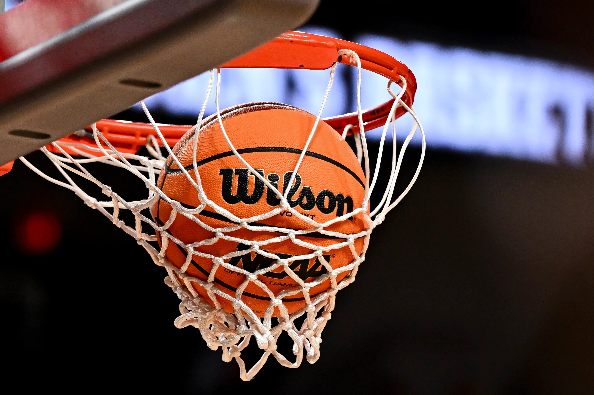
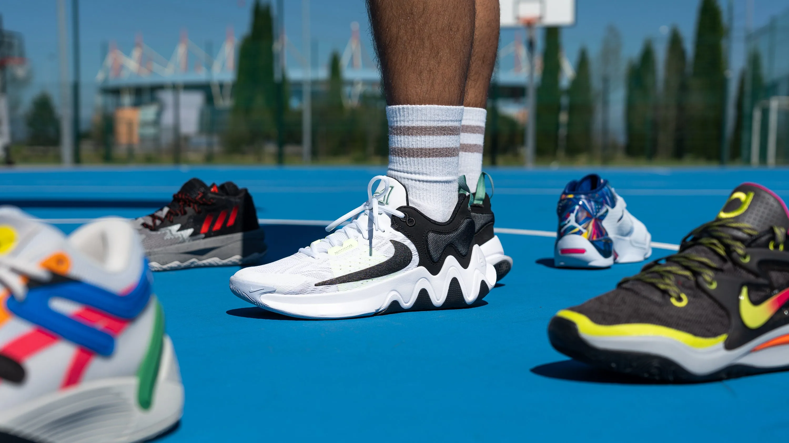
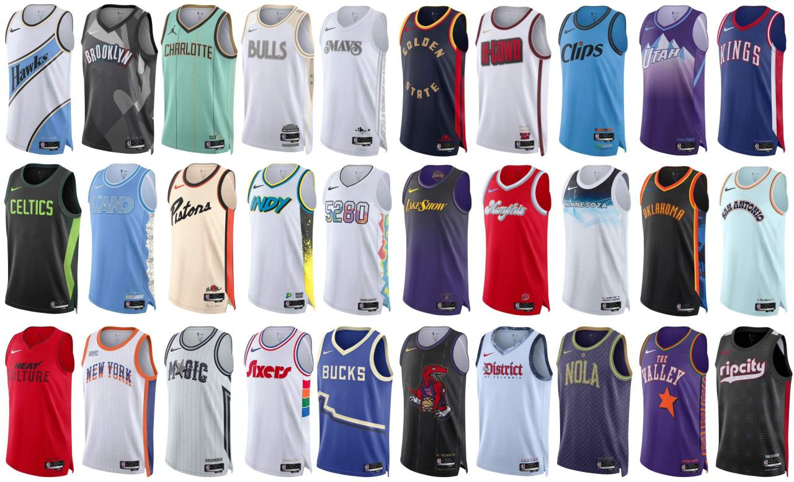
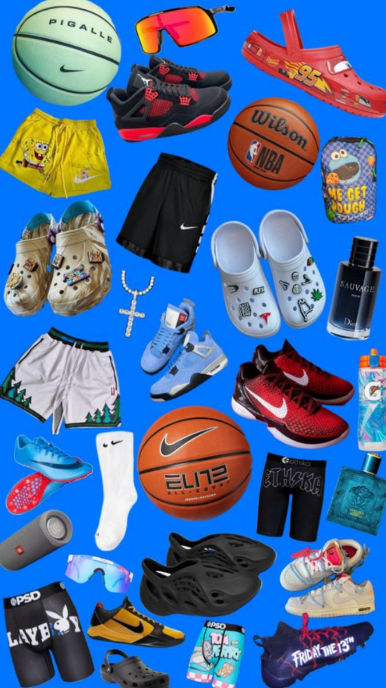

All About Basketball
Basketball is a dynamic and fast-paced sport that requires specific equipment to ensure safety, performance, and comfort. Whether you're playing in a professional league or a casual game, having the right gear is essential. Let's explore the key pieces of basketball equipment.
Basketball
The basketball is the most crucial piece of equipment in the game, designed with specific size, weight, and grip features to ensure players can handle and shoot it effectively. Official NBA basketballs are crafted from leather, with a circumference of 29.5 inches and a weight of around 22 ounces. 
Basketball Shoes
Basketball shoes are essential for providing support, cushioning, and traction. The high-top design offers additional ankle protection, while the soles are built for optimal grip on the court. Different styles of shoes are designed for varying playing preferences, such as high-performance shoes for agility or low-top shoes for speed. 
Basketball Uniform
A typical basketball uniform consists of a jersey and shorts, both made from breathable, moisture-wicking fabrics. Jerseys often display the team's colors, logo, and player numbers. The uniform helps enhance team spirit while ensuring comfort during gameplay. 
Basketball Accessories
Basketball accessories encompass items like knee pads, elbow pads, wristbands, and mouthguards, which protect players from injuries and enhance their comfort on the court. Other accessories, such as basketball bags for carrying gear and water bottles for hydration, are also essential.
